SOFITEL BAHRAIN ZALLAQ THALASSA SEA & SPA
Nikki & Ravi
A wedding centered on tradition, family, and the joy of being together.
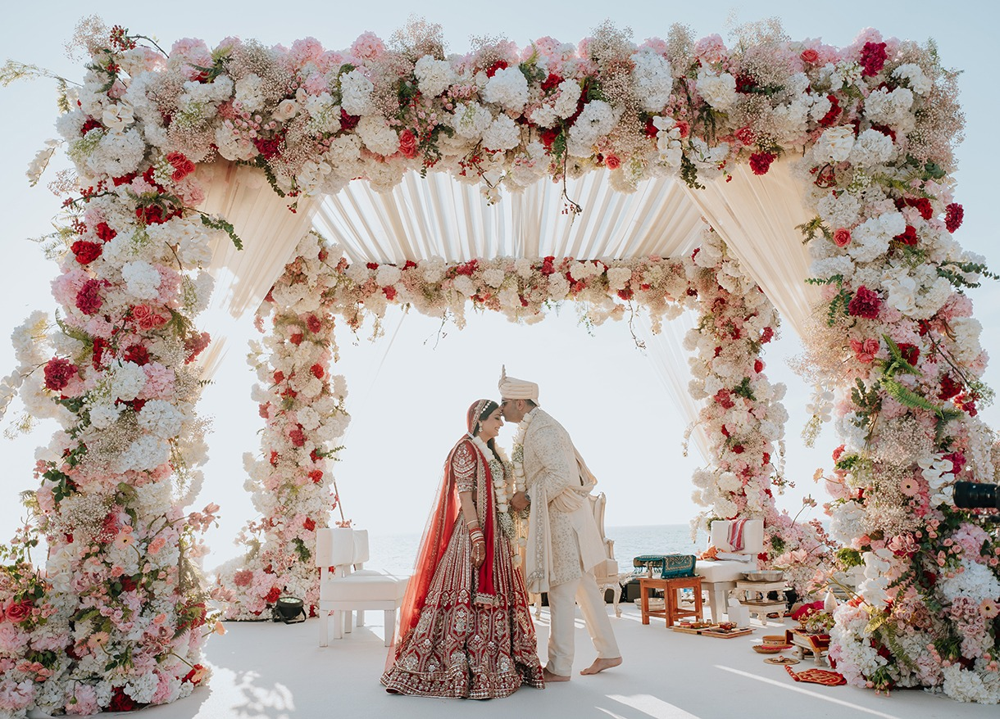
01 / A DAY TO REMEMBERA celebration that felt
like them.
Nikki and Ravi wanted a heartfelt wedding with their closest people, shaped by meaningful traditions and the pleasure of coming together. Ever After Weddings planned the celebrations at Sofitel Bahrain, allowing each part of the day to feel warm, joyful, and personal.
A sunlit
beginning.
A poolside gathering in peach and pastel tones, with marigold strings and a ceremony shared among family and friends.
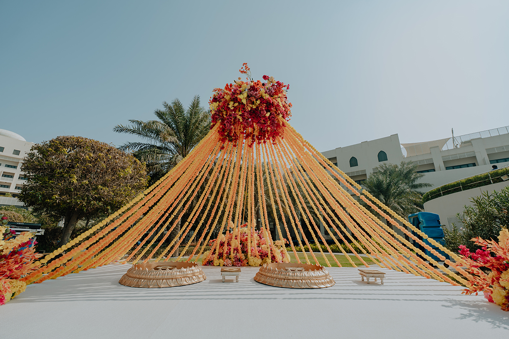
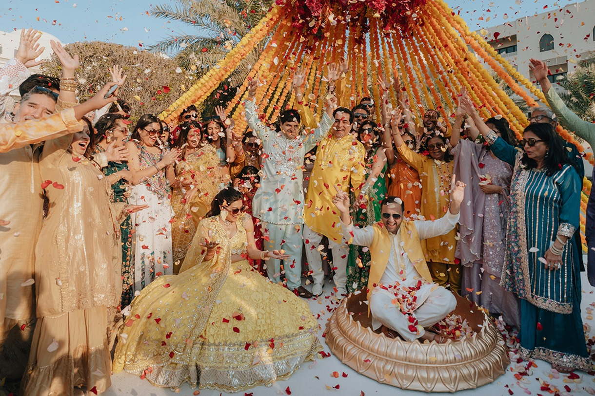
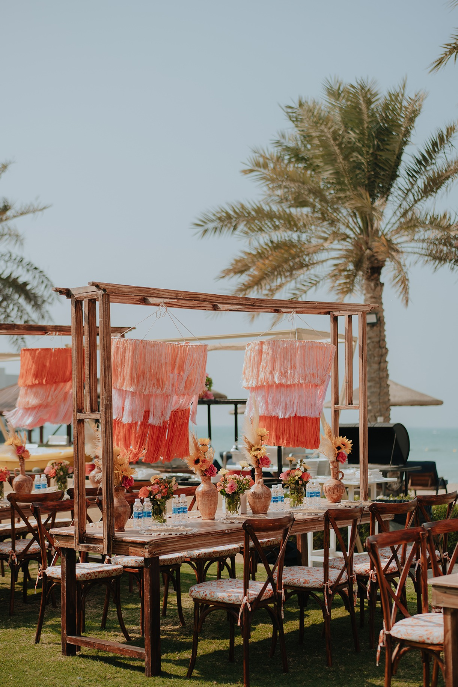
A day unfolds in chapters.
Each one its own feeling.
Into the
evening.
Blue and lavender set the scene for a night of performances, dancing, and generations celebrating together.
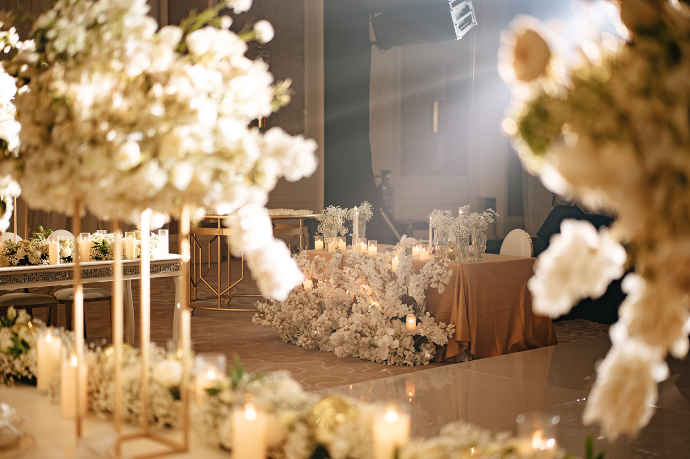
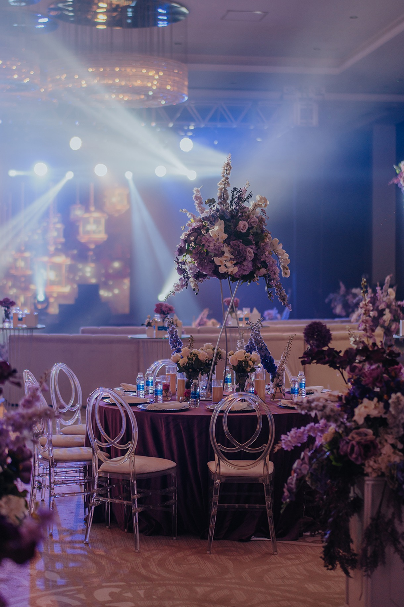
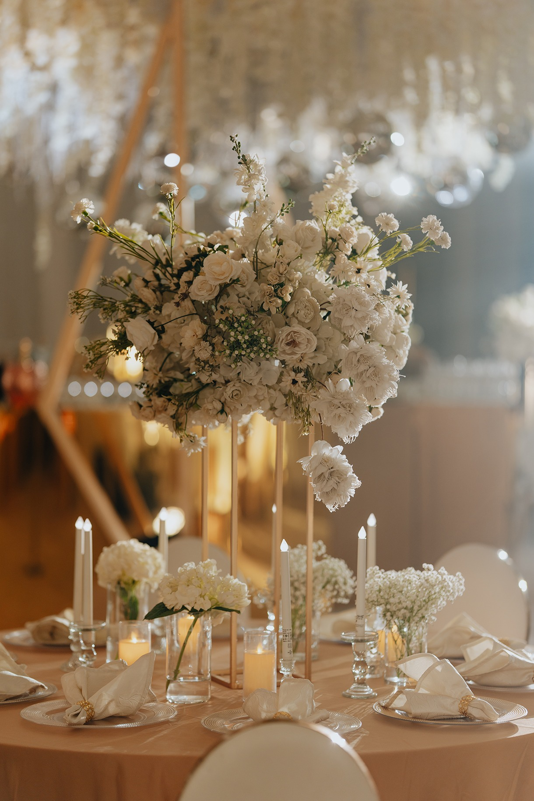
Together,
at last.
Ravi arrived with family and the sound of the dhol. Nikki entered beneath a floral canopy before the ceremony under a white mandap. The white mandap brought everyone together for the vows.
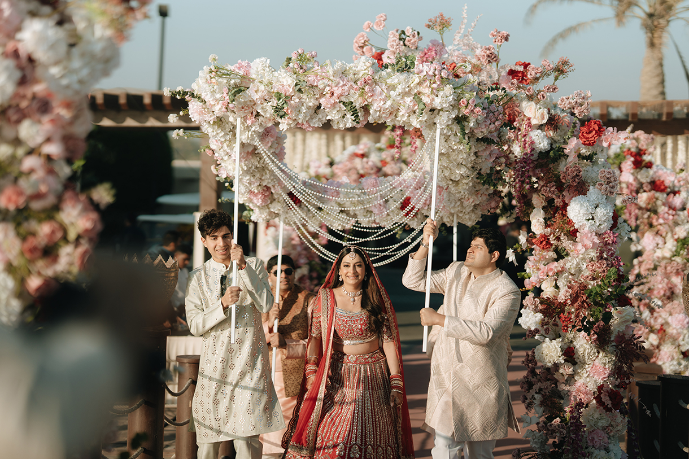
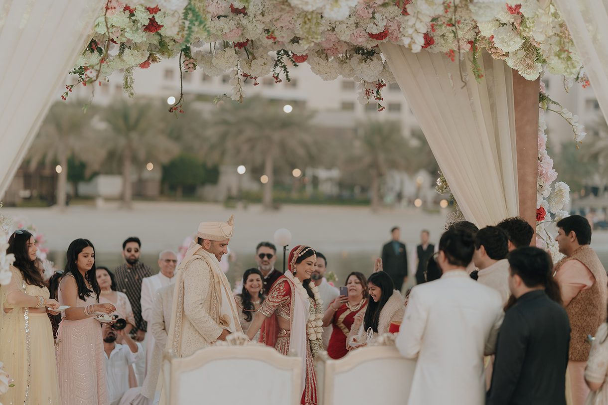
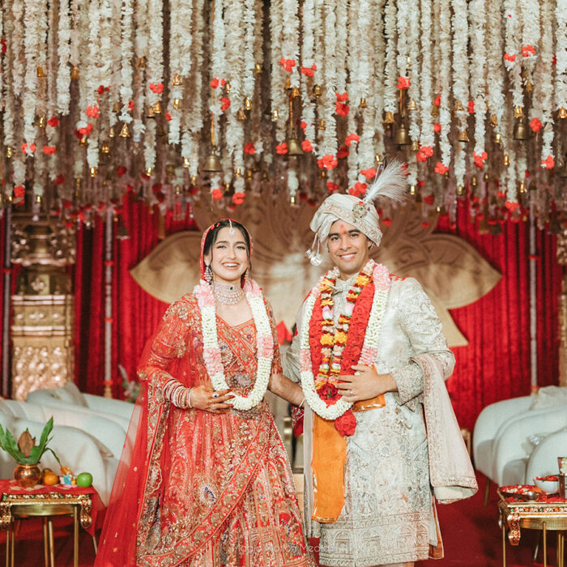
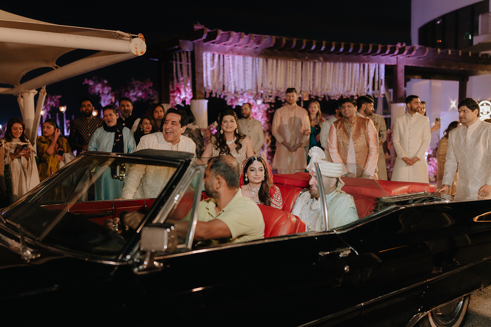
One more night
to remember.
A black-tie dinner turned into a warm evening of first dances and family speeches.
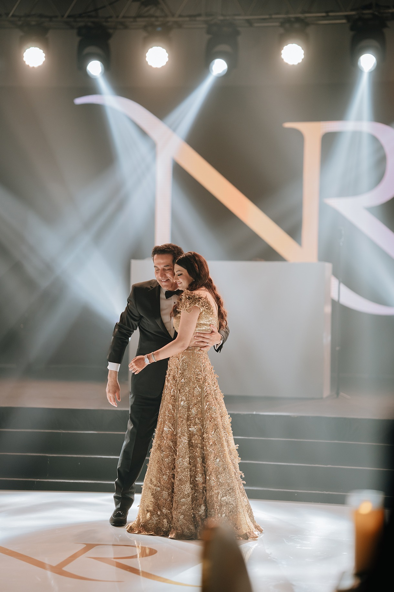
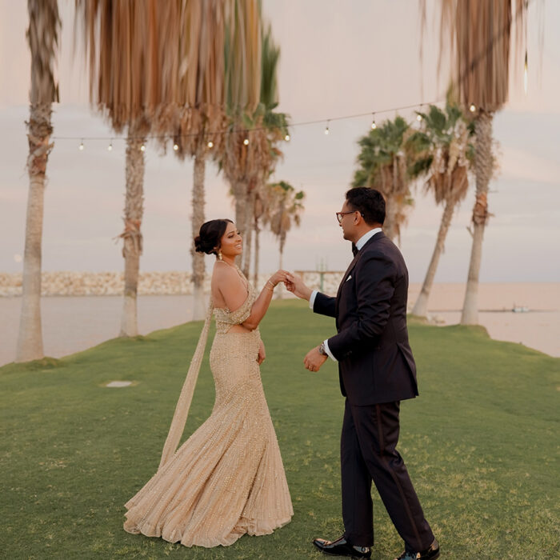
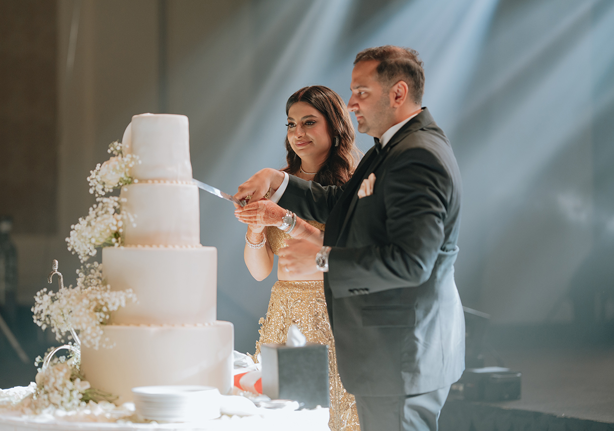
The wedding makers.
- Venue
- Sofitel Bahrain Zallaq Thalassa Sea & Spa
- Wedding planner
- Ever After Weddings
- Décor
- Arch Events Bahrain
- Makeup
- Pakhi Pahuja
- Bride and groom outfits
- Manish Malhotra